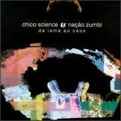
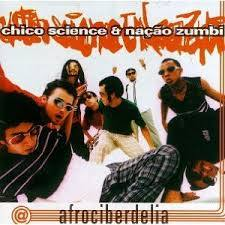
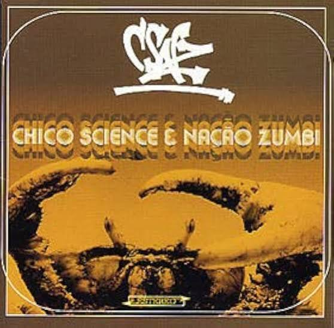
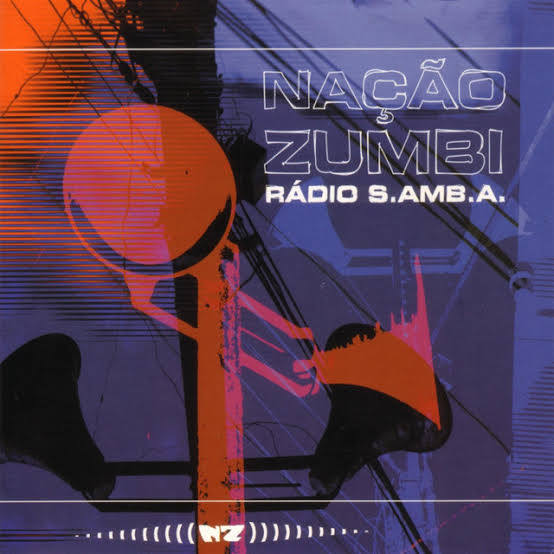
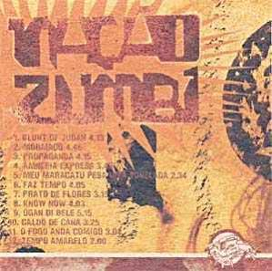
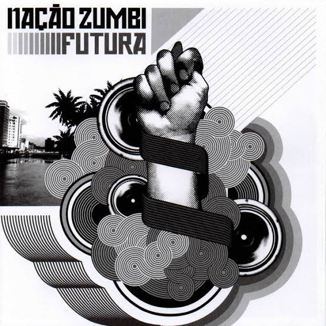
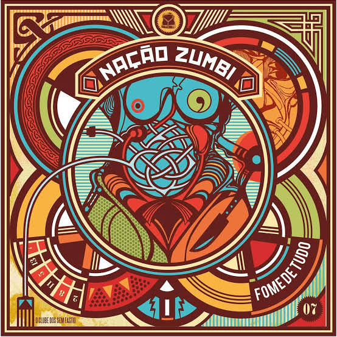
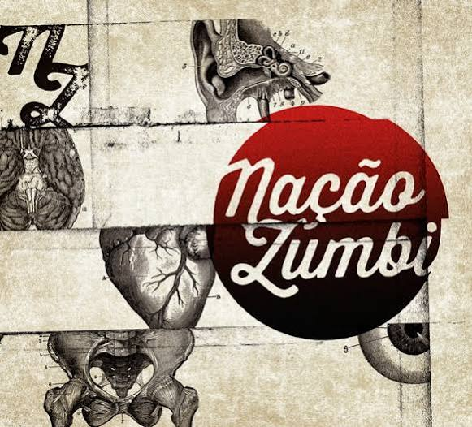
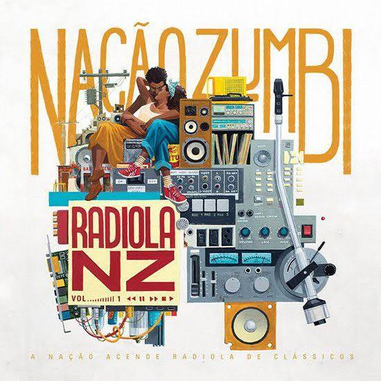

| Nome do Álbum | Ano de Lançamento | Descrição | Capas |
|---|---|---|---|
| Da Lama ao Caos | 1994 | Obra-prima do Manguebeat com Chico Science, misturando maracatu, rock e funk. |  |
| Afrociberdelia | 1996 | Último álbum com Chico Science, focado em psicodelia, elementos eletrônicos e ritmos afro. |  |
| CSNZ | 1998 | Álbum duplo misto que homenageia Chico Science com faixas inéditas de estúdio e remixes. |  |
| Rádio S.Amb.A. | 2000 | Primeiro álbum totalmente inédito com Jorge du Peixe nos vocais, marcando uma nova era. |  |
| Nação Zumbi | 2002 | Trabalho homônimo amadurecido que consolida o peso dos tambores e o groove pós-punk. |  |
| Futura | 2005 | Explora uma sonoridade mais densa, abstrata, com texturas modernas e dub. |  |
| Fome de Tudo | 2007 | Produzido por Mario Caldato Jr., traz uma pegada pop-rock enérgica sem perder as raízes. |  |
| Nação Zumbi (2014) | 2014 | Segundo disco homônimo, celebra os 20 anos de estrada com arranjos refinados e parcerias. |  |
| Radiola NZ Vol. 1 | 2017 | Álbum dedicado a regravações e versões de clássicos que influenciaram a identidade da banda. |  |
- Da Lama ao Caos (1994)
- Álbum de estreia e marco zero do Manguebeat com Chico Science, fundindo maracatu, rock pesado e hip-hop.
- Afrociberdelia (1996)
- Último disco gravado com Chico Science, trazendo uma forte pegada psicodélica, eletrônica e afro.
- CSNZ (1998)
- Álbum duplo misto que homenageia Chico Science com canções de estúdio que ficaram guardadas e remixes feitos por DJs.
- Rádio S.Amb.A. (2000)
- Início oficial da nova era da banda com Jorge du Peixe assumindo em definitivo os vocais principais.
- Nação Zumbi (2002)
- Trabalho homônimo denso e focado no peso da cozinha rítmica, consolidando a identidade pós-Chico Science.
- Futura (2005)
- Explora texturas futuristas e abstratas com forte influência de arranjos de metais, dub e reggae.
- Fome de Tudo (2007)
- Produzido por Mario Caldato Jr., apresenta uma sonoridade pop-rock mais enérgica, direta e focada em grooves modernos.
- Nação Zumbi (2014)
- Segundo álbum homônimo, celebrando os 20 anos da banda com produção refinada e participações especiais.
- Radiola NZ Vol. 1 (2017)
- Projeto composto exclusivamente por versões e releituras de músicas clássicas que formaram a bagagem da banda.